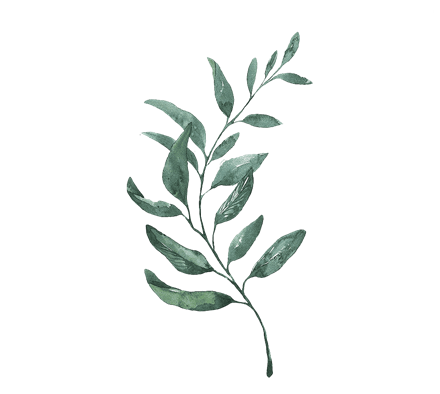

All Our Treatments
From classic facials to advanced La Fontaine skincare, foot care, nails and body treatments. Prices are indicative, so always check current pricing in the booking system.
Facial Treatments
Skin
Facial Treatments
Your skincare routine deserves better. We use Janssen Cosmetics products for visible results, tailored to your skin type and needs.
High-Tech Treatments
Skin
High-Tech Treatments
Add-On Treatments
Skin
Add-On Treatments
Foot Care
Foot
Foot Care
At KosmetiKos you get professional foot care from a certified foot therapist. You might be wondering what actually separates a foot therapist from a general pedicurist?
A foot therapist ("fotterapeut") is certified healthcare personnel with medical expertise in feet, and the title is protected. A pedicurist works with cosmetic wellbeing and care, and the title isn't protected in the same way.
Elisabeth qualified as a foot therapist in 1989, has decades of experience, and is still passionate about her craft. With her, your feet are in safe, professional hands.
Foot bath, treatment of hard skin, nail shaping, cuticle cleaning and care of problem areas, with cream. Can be done with or without polish.
Add-on Treatments & Specialist Care
Elisabeth also helps with more complex foot problems, including ingrown nails, thickened nails, corns, warts and other foot-related issues.
Ingrown and embedded toenails
Struggling with an ingrown or embedded toenail? This is a common problem that most often affects the big toe, and happens when the edge of the nail grows into the surrounding skin. Left untreated, the nail is pushed deeper as it keeps growing, and tight shoes and pressure tend to make it worse.
Common symptoms are pain and discomfort, redness and swelling, and sometimes an infection with pus, often on one side of the nail.
The causes vary: it can come down to cutting nails incorrectly, shoes that are too tight, tearing nails instead of cutting them, hereditary or anatomical factors, injury to the foot, or swollen legs due to age, diabetes, heart failure or being overweight.
A foot therapist can remove the part of the nail causing the problem, and we can also correct the nail by fitting a steel brace or plastic clip. This gently lifts the nail and relieves the painful pressure on the skin. In cases of serious infection, your doctor may supplement the treatment with antibiotics or a cortisone cream. Have a question? Just ask us, we're here to help your feet.
Hard skin and corns
Hard skin and corns develop as a natural protective response when the feet are exposed to repeated pressure, friction or rubbing, and the skin produces extra cells to reinforce the area.
Hard skin, or callus, tends to appear as flat, widespread areas of thickened skin over bony parts of the foot. The colour can range from white to greyish yellow, brown or red, and the skin can be pain-free, tender or have a burning sensation. Deep, painful cracks can also form in the hardened skin, especially on the heels.
A corn forms when hardened skin is pushed inward within a small, defined area, creating a hard core at the centre. This core can feel like a sharp point pressing into the skin and often causes significant pain. Corns are dry, waxy and clearly defined, and tend to appear on the toes or the ball of the foot.
Common causes include tight or poorly fitting shoes, socks with seams that rub, a lot of walking through work or sport, misalignment in the feet or toes, or skin conditions like psoriasis, eczema or the hereditary condition keratoderma punctata.
Elisabeth removes the hard skin and carefully drills or cuts out the core of the corn in a safe, pain-free way, so the painful pressure disappears immediately.
Plantar warts
Warts, or verrucae, are harmless skin growths caused by the wart virus. A wart is made up of living cells with its own blood vessels and nerves, and is more common in children than adults, since adults have usually developed immunity.
Warts are typically skin-coloured and hard, with an uneven surface, and if you've been walking on one for a while, hard skin can build up over it, creating a combination of corn and wart. They're often pain-free, but a wart on the sole of the foot can be quite painful to step on.
It spreads easily in damp shared spaces like changing rooms, showers, gyms and swimming pools.
If a wart is painful or bothering you, we can help remove it faster. We combine freezing treatment (cryotherapy) to damage the wart tissue with silver nitrate, which has a corrosive effect on the cells.
Athlete's foot
Athlete's foot, or tinea pedis, is a very common and contagious fungal infection of the outer layer of skin. Around 70 percent of people experience it at some point in their lives, and it's especially widespread among athletes and men.
Symptoms usually start between the two outermost toes, but can spread to the sole, the sides of the foot and the toenails.
Common signs include intense itching, stinging and burning between the toes or on the soles, itchy blisters, cracking, flaking and loose skin, dry and scaly skin on the soles, and a reddish border where inflamed and healthy skin meet.
The fungus thrives in warm, enclosed and damp environments, and you can pick it up through direct contact or in public places like swimming pools, saunas and shared showers where the fungus clings to skin flakes on the floor. Tight shoes and sweaty socks significantly increase the risk.
A foot therapist can help identify changes in the skin and advise you on the right care and products. To help prevent athlete's foot, dry your feet and between your toes thoroughly after washing, change socks often, avoid tight shoes, and rotate between a few pairs of shoes so they have time to fully dry out.
Hands & Nails
Nails
Hands & Nails
Body Treatments
Body
Body Treatments
Lashes and Brows
Beauty
Lashes and Brows
Lashes and brows frame your whole look, and even small adjustments can make a big difference. We offer tinting, shaping, lifting and lamination, tailored to exactly the look you want.
Lash tint
We tint your lashes in an intense black or a more natural brown, whichever you prefer. The result gives a mascara-free look with visibly longer lashes, though you can of course still wear mascara if you like. A small tip: avoid oil-based makeup remover to help the tint last longer.
Brow tint and shaping
Brows are shaped with wax and tweezers and tailored to your face shape, whether you want a natural or more defined look. The tint is strongest right after treatment and softens slightly after a couple of days. How long it lasts depends on your skin, hair type and how often you cleanse.
Lash lift and brow lamination
Lash lift and brow lamination bring out your natural features and give you a fresher, more awake look. We use gentle chemical solutions that shape and lift the hairs.
A lash lift curls the lashes from the root so they look longer and fuller, often combined with a tint. Brow lamination softens and straightens the brow hairs for a fuller, more symmetrical look.
A single treatment takes about an hour, and around ninety minutes if you do both together. A lash lift lasts 4 to 6 weeks, while brow lamination tends to last a bit longer, usually 5 to 8 weeks.
For the first 24 to 48 hours, keep your lashes and brows completely dry. Avoid water, steam, showering, exercise and other rough contact during this time. Also stay away from eye makeup and oil-based products for a couple of days.
Korean vs. traditional lash lift
We offer both Korean and traditional lash lifts, and the difference comes down to the chemicals used and how gentle the treatment is. The Korean lift uses cysteamine, a mild and controlled softening agent, while the traditional lift uses thioglycolic acid, which is more demanding on the lashes.
The Korean lift gives a natural, soft result with precise separation between lashes. The traditional lift gives a more dramatic lift from root to tip, though it can look slightly overdone on finer lashes.
The Korean lift is generally gentler on lash health, while the traditional lift can be harder on fine or weak lashes over time.
Makeup
Beauty
Makeup
We offer professional makeup application using Jane Iredale products, a clean mineral makeup free from pore-clogging ingredients, artificial dyes and harsh chemicals. Whether you want a natural everyday glow, flawless bridal makeup or the perfect party look, we tailor the products to your skin type and colouring. The makeup feels light on the skin, gives natural UV protection, and cares for your skin all day.
Everyday makeup
A light, natural look that highlights your best features, perfect for work, interviews or a small daily refresh. We focus on even, glowing skin and light definition of the eyes and brows.
Party / evening makeup
Heading to a party, a Christmas do, or another special occasion? We create a more glamorous, long-lasting look, either with bold eyes or a statement lip, tailored to your personal style and outfit.
Bridal makeup
For your big day we create a timeless, photo-friendly and extremely long-lasting look. We put a lot of care into making sure your skin looks flawless in daylight, indoor lighting and in photos, while still holding up to both tears and hugs.
Makeup lesson / course
Learn the secrets behind a perfect makeup application. During the session we go through your colouring and face shape, and walk you through the techniques step by step. You get to try the products yourself along the way, and leave with a personal colour chart.
Why Jane Iredale?
Jane Iredale is a gentle makeup that works well for sensitive skin, and is recommended by both dermatologists and plastic surgeons, including for those with acne, rosacea or sensitive skin. It works as foundation, concealer, sun protection and skincare all in one product. The sun protection comes from zinc oxide and titanium dioxide, giving natural, broad-spectrum SPF without irritating the skin. The products are also cruelty free and largely vegan.
More Services
Hair
More Services
We also offer hair removal and a wide range of hair services. See the full price list and availability in the booking system.
Hair Removal
Waxing and removal of unwanted hair.
Cut, Colour & Highlights
Haircuts, colouring, highlights and bleaching.
Hair Treatment, Beard, Perm & Bridal
Hair treatments, beard trims, perms and bridal packages.
Found your favourite?
Book online: choose a treatment and a time, then get confirmation by email.
Book Now